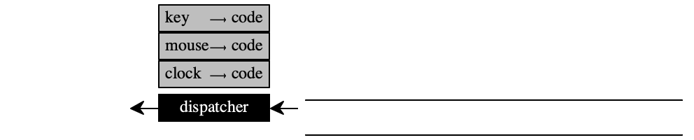
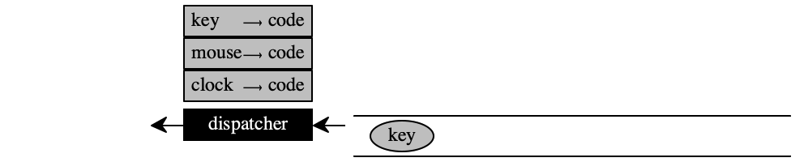

21 —
Tuesday, 24 March 2020
Presenters (1) Mike Sarfaty & Liam Weldon, (2) Corrine Cella & Liam Douglass
If we applied the continuation-passing transformation to our interpreter, we would obtain a state machine. This approach is “design via program transformation” and is definitely something you should keep in mind.
We will skip this derivation step but still study this state machine. Today’s lecture is preparation.
State Machines
Depending on when/from whom you took Fundamentals I, some of this material may have been covered. The relevant sections are the very basics of finite-state machines and a domain-specific language for finite-state machines.
You have encountered many state machines in your life: light switches, traffic lights, soda machines, and so on.
A traffic light can be in about three major states: red, yellow, and green (plus blinking yellow or red plus turned off). It transitions from red to green, from green to yellow, and from yellow to read. These transitions are triggered by the passage of time.
A soda machine also comes with two states. In the first state it is ready
to accept your selection. When you select a “classic foobar,” it
transitions to the second state—
Every state machine comes with states—
Specifying State Machines
the set of states a machine can be in;
transitions that take a machine from one state to another;
the state(s) in which a machine starts—
called initial state(s) the state(s) in which a machine shuts down—
called final state(s)
By showing red, a traffic light causes traffic to stop and thus prevents potential accidents. It is therefore called a fail-safe state. When machines misfunction they also tend to be engineered to go into a fail-safe state. The soda machine, for example, goes into a “waiting for your selection” state when turned on. A well-designed traffic light will go into a “red” state.

A “lexer” is the piece of a language parser that recognizes and differentiates individual words. Remember that in this course we leave this task to your JSON library.
states "" (no letter seen), "r" (just “r”), "ra", "rai", "rais", "raise" and FAILED;
transitions when the letter "r" shows up and the machine is in state "", it transitions to "r"; for any other letter, it moves to FAILED
Stop! Figure out the remaining transitions
the only initial state is "";
the two final states are "raise" (signaling success) and FAILED (signaling failure).
In addition to the above, people also use two other means to specify state machines: diagrams and tables.
Figure 78 shows how to turn this natural-language description into a diagram with a relatively obvious interpretation. The white node is an initial state, the black ones are final states, and the gray ones are intermediate states. The labels on the arrows specify when the lexer transitions from one state to another. Although every intermediate state connects to two successor states, the machine is deterministic because the transition labels are mutually exclusive.
Here is a table representation of the same finite machine:
current state
transition
next state
""
r
"r"
"r"
a
"ra"
"ra"
i
"rai"
"rai"
s
"rais"
"rais"
e
"raise"

states all natural numbers
transitions when the machine is in state n and its “input” within a certain time interval is n + 1, it transitions to state n + 1; otherwise it goes to a FAILED state.
0 is the initial state
FAILED is a final state
current state
transition
next state
0
1
1
1
2
2
2
3
3
3
4
4
...
...
...
current state
transition
next state
n
n + 1
n + 1
for all n ∈ N
n
k
FAILED
for k ≠ n + 1
The Stepper as a State Machine
We use fully parenthesized expressions to avoid precedence, which is not essential to the current topic.
current
next
if
E [(n1 + n2)]
E [n]
n = n1 + n2
E [(n1 - n2)]
E [n]
n = n1 - n2
E [(n1 * n2)]
E [n]
n = n1 * n2
E [(n1 / n2)]
E [n]
n = n1 / n2
states all ArithmeticExprs are states
transitions determining the result in the rightmost un-evaluated sub-expression is the only kind of transition though there are four flavors
every arithmetic expression is an initial state
all plain numbers are final states
Implementing State Machines
If a state machine reacts to notions other than its current state, the driver function must consume this input and manage it.
State driver(State initial_state) { State current = initial_state; while !(final_state_huh(current)) { current = transition(current); displayln(current); } // current is now a __final state__ return current; } State transition(State current) { ... return next; } Boolean final_state_huh(State s) { ... return what_is_it; }
Figure 80 displays the complete code for the ArithmeticExpr stepper. Its entry point is the driver function, which refers to the final? and transition functions. The first one is just number? here, the second one follows exactly the informal description.
Lectures/21/stepper.rkt
#lang racket (require "while.rkt" "show-state.rkt") #; {ArithmeticExpr -> Number} ;; print each step of the calculation that reduces `expr` to a number (define (driver initial) (display " ") (displayln initial) (define current initial) (while (not (final? current)) do (set! current (transition current)) (show-state current)) current) #; {ArithmeticExpr -> ArithmeticExpr} (define (transition ae0) (let --> ([ae ae0] [E HOLE]) (match ae [(list (? number? n_1) '+ (? number? n_2)) (fill E (+ n_1 n_2))] [(list (? number? n_1) '- (? number? n_2)) (fill E (- n_1 n_2))] [(list (? number? n_1) '* (? number? n_2)) (fill E (* n_1 n_2))] [(list (? number? n_1) '/ (? number? n_2)) (fill E (/ n_1 n_2))] [(list ae_1 o (? number? n)) (--> ae_1 (fill E `[,HOLE ,o ,n]))] [(list ae_1 o ae_2) (--> ae_2 (fill E `[,ae_1 ,o ,HOLE]))]))) #; {E ArithemticExpr -> ArithemticExpr} (define (fill E inside) (match E [(? (curry equal? HOLE)) inside] [(list E o (? number? n)) (list (fill E inside) o n)] [(list ae_1 o E) (list ae_1 o (fill E inside))])) #; {ArithmeticExpr -> Boolean} (define final? number?) (define HOLE '[---]) ;; - - - - - - - - - - - - - - - - - - - - - - - - - - - - - - - - - - - - (module+ test (require rackunit) (check-equal? (driver '((1 + 2) * (3 - (84 / 21)))) -3))
The transition function partitions the given expression into an evaluation context E and an ArithmeticExpr that has just two numbers as sub-expressions. It evaluates this inside expression and fills E with the resulting number. It is the driver function’s responsibility to continue until there is nothing left to do.